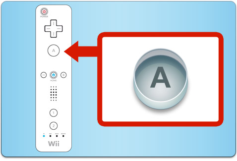
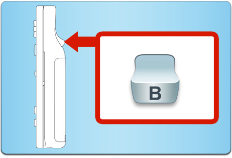
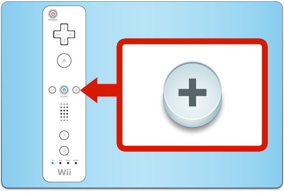
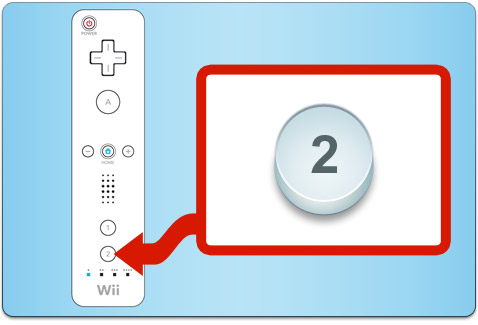
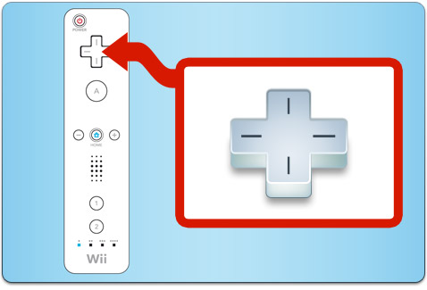

5 |
Controles |
|

Para usar el Wii Remote para jugar, apunta a la pantalla.
Puedes usar

Para recoger los objetos, coloca el cursor sobre el objeto sin soltar
Algunos acertijos podrían requerir que gires objetos. Para girarlos, coloca el cursor sobre el objeto sin soltar

Si oprimes cuando estás en la calle, abrirás el ACME Phone (Teléfono ACME). Oprime el botón de nuevo para cerrar el ACME Phone (Teléfono ACME).
Oprime para regresar al Menú HOME.

Oprime

Aunque localices al delincuente, no se dejará atrapar por las buenas.
|
 |
 |
 |